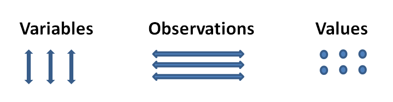

Chapter 2 Import
The first step in the typical data science project involves importing data into R. There are numerous packages for different data types all with varying preferences on speed and efficiency. Here are some R Packages for Importing Data into R:
2.1 Tabular Data
Tabular data consists of variables, observations and values.

readr: Read flat/tabular text files from disk (or a connection). readr has some benefits over the base/utils version as smart column type parsing and not automatically converting strings into factors.
dat <- read_csv("file_name.csv")readxl: Import excel files into R. Supports ‘.xls’ via the embedded ‘libxls’ C library (http://sourceforge.net/projects/libxls/) and ‘.xlsx’ via the embedded ‘RapidXML’ C++ library (http://rapidxml.sourceforge.net). Works on Windows, Mac and Linux without external dependencies.
2.2 Hierarchical Data
Hierarchical Data is a tree-structure such as XML, HTML, JSON.
jsonlite: A fast JSON parser and generator optimized for statistical data and the web.xml2: Work with XML files using a simple, consistent interface. Built on top of the ‘libxml2’ C library.rvest: Wrappers around the ‘xml2’ and ‘httr’ packages to make it easy to download, then manipulate, HTML and XML.
2.3 Relational Data
2.4 Distributed Data
Distributed Data consists of non-relational formats with quick access to data over a large number of nodes.
sparklyr: Filter and aggregate Spark datasets then bring them into R for analysis and visualization.
2.5 Different Data Formats
haven: Import and Export ‘SPSS’, ‘Stata’ and ‘SAS’ Files.
library(haven)
claims <- read_sas("http://www.businessandeconomics.mq.edu.au/our_departments/Applied_Finance_and_Actuarial_Studies/acst_docs/glms_for_insurance_data/data/claims_sas_miner.sas7bdat")
head(claims)## # A tibble: 6 × 33
## ID KIDSDRIV PLCYDATE TRAVTIME CAR_USE POLICYNO BLUEBOOK
## <chr> <dbl> <date> <dbl> <chr> <dbl> <dbl>
## 1 100058542 0 1996-03-17 17.09181 Private 36292520 9860
## 2 100093408 0 1993-07-26 17.98656 Private 31958061 1500
## 3 100208113 0 1994-06-06 47.00727 Commercial 42433312 30460
## 4 100237269 0 1999-01-19 31.24381 Private 49896544 16580
## 5 10042968 0 1999-05-18 13.96243 Commercial 79298192 23030
## 6 100737644 0 1996-02-28 45.79204 Private 43393435 20730
## # ... with 26 more variables: INITDATE <date>, RETAINED <dbl>,
## # NPOLICY <dbl>, CAR_TYPE <chr>, RED_CAR <chr>, OLDCLAIM <dbl>,
## # CLM_FREQ <dbl>, REVOLKED <chr>, MVR_PTS <dbl>, CLM_AMT <dbl>,
## # CLM_DATE <date>, CLM_FLAG <chr>, BIRTH <date>, AGE <dbl>,
## # HOMEKIDS <dbl>, YOJ <dbl>, INCOME <dbl>, GENDER <chr>, MARRIED <chr>,
## # PARENT1 <chr>, JOBCLASS <chr>, MAX_EDUC <chr>, HOME_VAL <dbl>,
## # SAMEHOME <dbl>, DENSITY <chr>, YEARQTR <chr>foreign: Functions for reading and writing data stored by some versions of Epi Info, Minitab, S, SAS, SPSS, Stata, Systat and Weka and for reading and writing some dBase files.